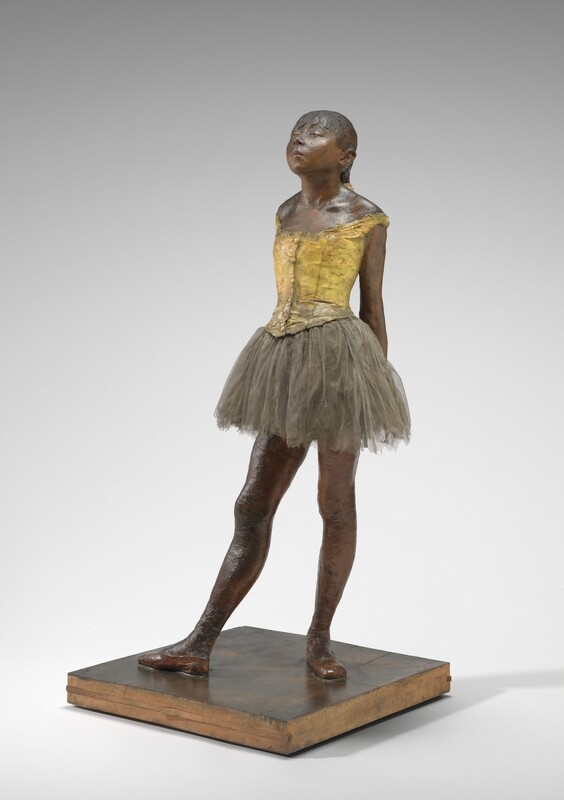

十四岁的小舞者 Little Dancer Aged Fourteen
德加 · 1878–1881年 · 华盛顿国家美术馆
Edgar Degas · 1878–81 · National Gallery of Art, Washington
图片：华盛顿国家美术馆开放资源，公有领域 / Image: National Gallery of Art Open Access, public domain

发现 · Discover
唯一的雕塑 The only sculpture
德加做过很多雕塑，但这是他一生中唯一公开展出过的一件。
Degas made many sculptures, but this is the only one he ever exhibited in public.
真的头发 Real hair
小舞者的辫子是用真的人发做的，上面系着一根缎带。
The dancer's braid is made of real human hair, tied with a ribbon.
真的衣服 Real clothes
她穿着真的胸衣、芭蕾舞裙和舞鞋，不是用蜡或青铜做出来的。
She wears a real bodice, tutu and slippers, not modelled in wax or bronze.
蜡做的 Made of wax
在当时，雕塑通常用光滑的大理石或青铜。德加却用了带颜色的蜂蜡，让她看起来像真人的皮肤。
At the time, sculpture was usually smooth marble or shiny bronze. Degas used coloured beeswax, so that she looks like real skin.
玻璃柜 The glass case
1881年，德加把她放在玻璃柜里展出，就像当时博物馆里展示的逼真蜡像。
In 1881, Degas showed her in a glass case, like the lifelike wax figures displayed in museums at the time.
她的名字 Her name
她叫玛丽·范戈特姆，1865年出生，是巴黎歌剧院芭蕾舞学校的学生。她的名字是通过一张素描上的题字确认的。
Her name was Marie van Goethem, born in 1865, a student at the Paris Opéra ballet school. She was identified through an inscription on a drawing.
故事 · The story
推迟了两次 Twice postponed
德加原本想在1880年的印象派画展上展出这件雕塑，但两次推迟。1881年，他终于在画展的后半段把它放进了展厅。
Degas had planned to show the sculpture at the Impressionist exhibition of 1880, but twice postponed it. In 1881 he finally installed it during the second half of the exhibition.
1878–1881年 · 华盛顿国家美术馆 / 1878–81 · National Gallery of Art, Washington
一件不一样的雕塑 A different kind of sculpture
观众原本期待看到大理石或青铜的理想化人物，看到的却是一个穿着真衣服、有着真头发的蜡像女孩。很多人都不知道该怎么看待它。
Visitors expected idealised figures in marble or bronze. Instead they found a wax girl with real clothes and real hair. Many did not know what to make of her.
1878–1881年 · 华盛顿国家美术馆 / 1878–81 · National Gallery of Art, Washington
玻璃柜里的她 In her glass case
今天，原始的蜡像保存在华盛顿国家美术馆，依然站在玻璃柜里。
Today the original wax figure is at the National Gallery of Art in Washington, still standing in a glass case.
1878–1881年 · 华盛顿国家美术馆 / 1878–81 · National Gallery of Art, Washington
德加唯一公开展出的雕塑。 The only sculpture Degas ever exhibited.
作品档案 · Artwork record
| 画家（生卒年） · Artist (dates) | 埃德加·德加（1834–1917） / Edgar Degas (1834–1917) |
|---|---|
| 画名 · Title | 十四岁的小舞者 / Little Dancer Aged Fourteen |
| 年份 · Date | 1878–1881年 / 1878–81 |
| 材质 · Medium | 着色蜂蜡、黏土、金属骨架、绳子、画笔、人的头发、丝和亚麻缎带、棉质胸衣、棉和丝的芭蕾舞裙、亚麻舞鞋，木底座 / Pigmented beeswax, clay, metal armature, rope, paintbrushes, human hair, silk and linen ribbon, cotton faille bodice, cotton and silk tutu, linen slippers, on wooden base |
| 尺寸 · Dimensions | 不含底座 98.9 × 34.7 × 35.2 cm / overall without base: 98.9 × 34.7 × 35.2 cm |
| 收藏地 · Collection | 华盛顿国家美术馆（保罗·梅隆夫妇收藏） / National Gallery of Art, Washington (Collection of Mr. and Mrs. Paul Mellon) |
关于画家 · About the artist
埃德加·德加（1834–1917），法国画家，生于巴黎。他参加了印象派画展，以描绘芭蕾舞者著称。
Edgar Degas (1834–1917) was a French painter, born in Paris. He took part in the Impressionist exhibitions and is best known for his paintings of ballet dancers.